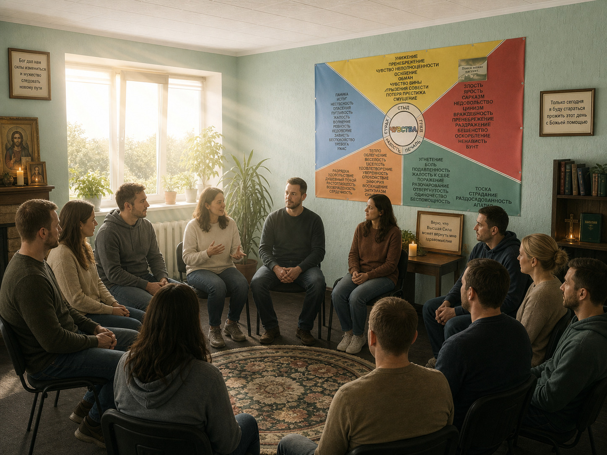
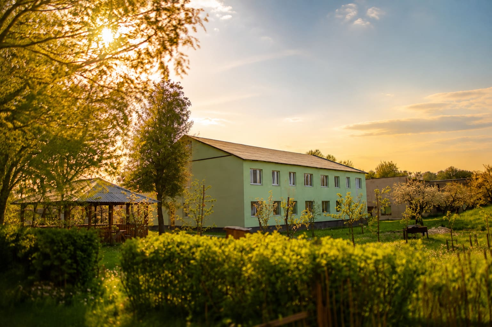
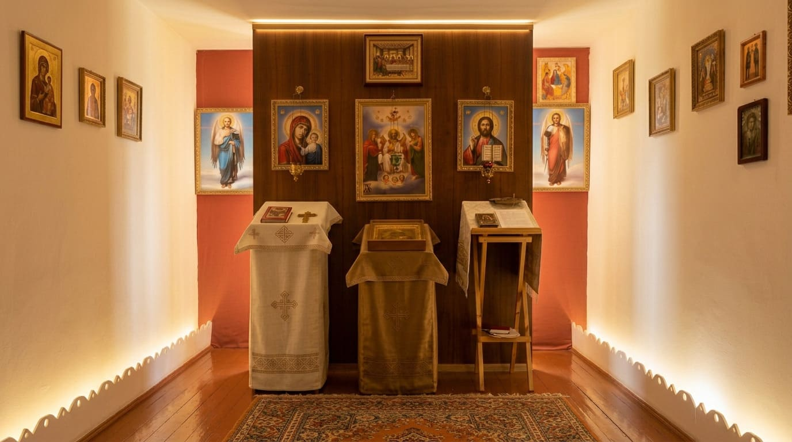
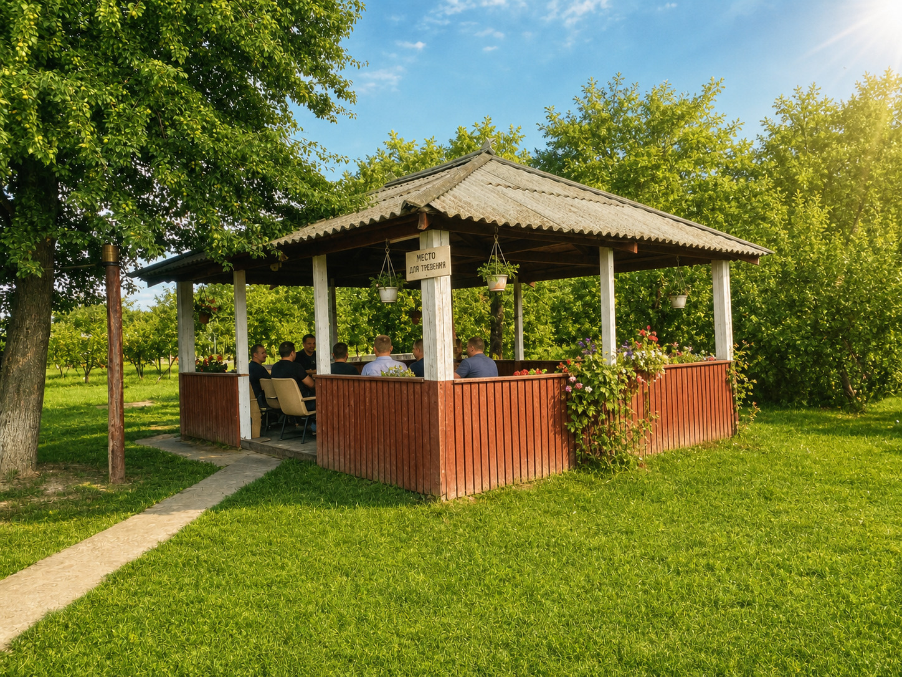

+375 29 784 18 20
|
+375 29 557 86 41
Духовная составляющая является важной частью программы восстановления в центре «Анастасис».
Она помогает человеку переосмыслить жизненные ценности, найти внутреннюю опору и сделать шаги к изменениям.

В процессе восстановления важно внимание не только к изменению привычек, но и к внутреннему состоянию человека, его взглядам и жизненным ориентирам.
Духовная составляющая помогает человеку задуматься о ценностях, ответственности и отношении к собственной жизни.
Эта часть программы направлена на поиск внутренней опоры и формирование более осознанного взгляда на будущее.
Восстановление человека происходит не только благодаря программе и работе специалистов, но и благодаря среде, в которой он находится.
Спокойная атмосфера центра, возможность сосредоточиться на изменениях и время для переосмысления помогают человеку постепенно двигаться к новой жизни.
Особая атмосфера центра помогает человеку найти время для размышления, внутреннего переосмысления и обращения к духовным ценностям.

В процессе восстановления человек постепенно переосмысливает свой опыт, учится по-новому смотреть на себя и свою ответственность за дальнейшую жизнь.
Возможность разобраться в причинах прошлых решений, увидеть последствия зависимости и начать путь изменений.
Работа с жизненными взглядами, ценностями и отношением к себе и окружающим людям.
Формирование более устойчивого взгляда на будущее и понимание дальнейших шагов после программы.

В процессе внутренних перемен человек получает возможность обратить внимание не только на внешние изменения, но и на свой внутренний мир, жизненные ценности и отношение к происходящему.
Духовный куратор помогает человеку задуматься о важных вопросах, найти внутреннюю опору и постепенно формировать более осознанный взгляд на свою жизнь.
Такая поддержка является частью комплексного подхода центра «Анастасис» и помогает человеку двигаться по пути возвращение к полноценной жизни.
Духовная составляющая программы является частью общего подхода центра к восстановлению человека.
В сочетании с работой специалистов, групповой поддержкой и участием в программе человек получает возможность глубже понять себя, свои жизненные цели и причины, которые привели к зависимости.
Главная задача — помочь человеку не только изменить привычный образ жизни, но и сформировать новые ориентиры, которые будут поддерживать его после завершения программы.
